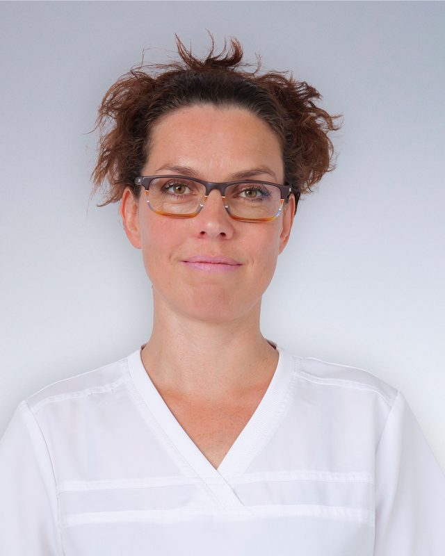

Pneumoložka
MUDr. Lýdia Slušná
Atestovaná pneumoložka s rozsáhlými klinickými a organizačními zkušenostmi. V letech 2006 až 2025 aktivně působila na Klinice pneumologie FN Bulovka, kde zastávala různé vedoucí funkce, včetně pozice vedoucí lůžkového oddělení, a následně vedoucí lékařky akutní ambulance. Zároveň předávala své znalosti jako odborná asistentka při výuce na 3. lékařské fakultě Univerzity Karlovy.
MUDr. Slušná se specializuje na péči o pacienty s astma bronchiale, s velkou praxí získanou mimo jiné i v Centru pro obtížně léčitelné astma FN Bulovka. Dále se věnovala komplexní péči o pacienty s bronchiektáziemi a vzácným onemocněním primární ciliární dyskinezí.
Ordinuje: pondělí, úterý